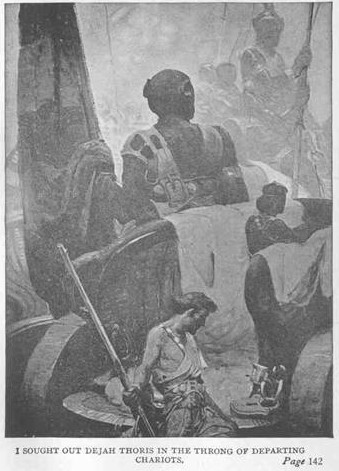

Niềm thôi thúc đầu tiên là nói với nàng tình yêu của tôi, nhưng rồi tôi nghĩ tới tình trạng tuyệt vọng của nàng khi chỉ có mình tôi là có thể làm nhẹ đi gánh nặng tù đày và bảo vệ nàng theo cách thức yếu ớt của tôi để chống lại hàng ngàn kẻ thù cha truyền con nối mà nàng phải đối mặt khi chúng tôi tới Thark. Tôi không thể ngẫu nhiên khiến cho nàng thêm đau đớn hay phiền muộn bằng cách thừa nhận một tình yêu mà trong mọi khả năng cho phép nàng không thể đáp lại. Nếu tôi không thận trọng, nàng sẽ gặp nhiều khó khăn hơn bây giờ, và ý nghĩ rằng nàng có thể cảm thấy tôi đã lợi dụng sự tuyệt vọng đó để tác động đến quyết định của nàng là nguyên do cuối cùng khiến cho tôi đành chôn giấu mối tình.
“Vì sao cô lặng lẽ thế, Dejah Thoris?” Tôi hỏi. “Có lẽ cô nên quay lại với Sola và nơi trú ngụ của mình.”
“Không,” nàng khẽ đáp, “tôi hạnh phúc ở đây. Tôi không biết vì sao như vậy. Tôi luôn luôn thấy hạnh phúc và hài lòng khi anh, một người xa lạ, đang ở cùng tôi, John Carter ạ. Những lúc ấy hình như tôi thấy an toàn khi nghĩ rằng, cùng với anh, tôi có thể quay lại vương quốc của cha tôi và cảm nhận vòng tay mạnh mẽ của ông quanh người tôi và những giọt nước mắt, những nụ hôn của mẹ tôi lên má.
“Mọi người hôn nhau trên sao Hỏa à?” Tôi hỏi, khi nàng giải thích từ nàng đã sử dụng, để trả lời thắc mắc của tôi về ý nghĩa của nó.
“Bố mẹ, anh em, chị em, vâng, và,” nàng nói thêm với một giọng thấp, trầm tư, “những kẻ yêu nhau.”
“Và cô, Dejah Thoris, có ba mẹ, anh em và chị em?”
“Vâng.”
“Và một người yêu?”
Nàng im lặng, và tôi không dám lặp lại câu hỏi.
“Đàn ông ở Barsoom,” cuối cùng nàng nói, “không hỏi những câu hỏi riêng tư như thế với phụ nữ, trừ mẹ của anh ta, và người phụ nữ mà vì nàng anh ta đã chiến đấu và chiến thắng.”
“Nhưng tôi đã chiến đấu...” Tôi bật thốt, và ước gì lưỡi của tôi bị cắt khỏi miệng, vì nàng quay lại ngay khi tôi giật mình ngưng nói, và kéo mảnh lụa của tôi khỏi vai, nàng đưa trả cho tôi, rồi không nói một lời nào, đầu ngẩng cao, nàng bước đi với dáng điệu của một nữ hoàng hướng về quảng trường và lối vào tòa nhà của mình.
Tôi không cố đi theo nàng, mà chỉ đứng nhìn xem nàng có an toàn về tới nhà không, rồi ra lệnh cho Woola đi cùng nàng, tôi chán chường quay về nhà của mình. Tôi ngồi bó gối hàng giờ trên những lớp vải lụa, cố lắng những cảm xúc xuống, suy tư về những ngẫu nhĩ lạ lùng thường đùa cợt với linh hồn khốn khổ của chúng ta.
Đây là tình yêu! Tôi đã trốn khỏi nó suốt bao nhiêu năm rong ruổi qua năm lục địa và những biển cả bao bọc chúng, không ngó ngàng đến những phụ nữ xinh đẹp và những cơ may thúc hối; không ngó ngàng đến niềm khao khát nửa vời đối với tình yêu và sự tìm kiếm thường trực con người lý tưởng của tôi, để rồi lại rơi một cách phẫn nộ và tuyệt vọng vào một mối tình với một sinh vật ở một thế giới khác, thuộc một chủng loại tuy tương tự nhưng không đồng nhất với chủng loại của tôi. Một người đàn bà nở ra từ một quả trứng, và có thể sống tới một ngàn tuổi; với những đồng loại có những tập tục và ý tưởng lạ lùng; một người đàn bà mà niềm hy vọng, những thú vui, những chuẩn mực về đức hạnh và những điều phải quấy của nàng khác rất xa với của tôi, như đã thấy ở những người Hỏa tinh da xanh.
Phải, tôi là một tên khờ, nhưng tôi đang yêu, và dù phải chịu sự bất hạnh lớn nhất mà tôi từng biết tôi cũng không thể làm khác được. Tình yêu là thế đó, và những kẻ yêu nhau ở bất cứ nơi nào con người biết yêu là thế đó.
Với tôi, Dejah Thoris là tất cả những gì hoàn hảo nhất; tất cả đều đức hạnh, đẹp đẽ, cao quý và tốt lành. Tôi tin vào điều đó từ đáy tim tôi, từ sâu thẳm hồn tôi vào đêm hôm đó ở Korad, khi tôi ngồi bó gối trên những tấm lụa và khi vầng trăng lớn của Barsoon trôi nhanh qua bầu trời hướng tây để tới chân trời, soi sáng những hình chạm trổ bằng vàng và cẩm thạch và châu ngọc trong gian phòng của tôi, và tôi vẫn tin vào điều đó ngay hôm nay, khi tôi ngồi ở bàn viết trong căn phòng đọc sách nhỏ nhìn ra dòng sông Hudson. Hai mươi năm đã trôi qua. Trong đó có mười năm tôi sống và chiến đấu vì Dejah Thoris và dân chúng của nàng, và mười năm tôi sống trong hồi ức về nàng.
Buổi sáng chúng tôi xuất phát về Thark trời trong và nắng nóng, như mọi buổi sáng Hỏa tinh, ngoại trừ sáu tuần khi băng tuyết tan chảy ở hai cực của hành tinh.
Tôi tìm thấy Dejah Thoris trong đoàn xe đang xuất phát, nhưng nàng quay lưng lại phía tôi, và tôi có thể nhìn thấy máu đỏ bừng trên gương mặt của nàng. Với sự mâu thuẫn ngốc nghếch của mối tình, tôi đã lặng im khi lẽ ra tôi có thể bào chữa cho sự thiếu hiểu biết, hay ít nhất cũng là sự nghiêm túc, trong bản chất của sự xúc phạm của tôi, và nhờ đó tệ ra cũng hòa giải được phần nào với nàng.
Bổn phận của tôi nhắc cho tôi nhớ tôi phải nhìn xem nàng có thoải mái không, thế nên tôi nhìn vào cỗ xe của nàng và sắp xếp lại các tấm lụa và da thú của nàng. Trong lúc đang làm việc đó, tôi hoảng hốt khi nhận thấy nàng bị xiềng chặt một cổ chân vào hông của cỗ xe.
“Điều này có nghĩa là gì?” Tôi hét lên, quay sang Sola.

“Sarkoja nghĩ rằng tốt nhất nên như thế.” Nàng đáp, vẻ mặt nàng cho thấy nàng không đồng ý với cách làm đó.
Khi xem xét cái cùm, tôi thấy rằng nó có một cái khóa nhíp to lớn.
“Chìa khóa đâu Sola? Đưa nó cho tôi.”
“Sarkoja đeo nó, John Carter.” Nàng đáp.
Tôi quay đi không nói thêm lời nào và tìm ra Tars Tarkas. Tôi phản đối dữ dội những cách đối xử tàn ác và làm nhục không cần thiết đối với Dejah Thoris.
“John Carter,” ông ta đáp, “nếu có lúc nào mà anh và Dejah Thoris bỏ trốn khỏi người Thark thì đó chính là trong cuộc hành trình này. Chúng tôi biết rằng anh sẽ không bỏ đi mà không có cô ta. Anh đã chứng tỏ mình là một chiến binh hùng mạnh, và chúng tôi không muốn xiềng anh lại, nếu không thì cùm cả hai người là cách dễ dàng nhất để bảo đảm an toàn. Tôi đã nói xong”.
Tôi tìm thấy Dejah Thoris trong đoàn xe đang xuất phát.
Tôi nhìn thấy ngay sức mạnh trong lý lẽ của ông ta, và biết rằng van nài là điều vô ích, nhưng tôi yêu cầu nên lấy lại chìa khoá từ Sarkoja và rằng cô ta nên được lệnh để yên cho tù nhân trong tương lai.
“Điều này, ông có thể thực hiện cho tôi để đáp lại tình bạn mà tôi phải thú nhận tôi cảm thấy đối với ông, Tars Tarkas.”
“Tình bạn à?” Ông ta đáp. “Không có cái thứ đó đâu, John Carter, nhưng nếu anh muốn, tôi sẽ lệnh cho Sarkoja thôi quấy rầy cô gái, và tự tôi sẽ giữ chìa khóa.”
“Trừ phi ông muốn tôi chịu trách nhiệm làm việc đó.” Tôi đáp, mỉm cười.
Ông ta nghiêm trang nhìn tôi hồi lâu rồi nói:
“Nếu anh nói với tôi rằng cả anh và Dejah Thoris sẽ không cố tìm cách bỏ trốn cho tới khi chúng ta tới cung điện của Tal Hajus an toàn, anh sẽ có chìa khoá và có thể ném cái cùm xuống sông Iss.”
“Tốt hơn là ông nên giữ chìa khoá, Tars Tarkas.” Tôi đáp.
Ông ta mỉm cười và không nói gì nữa, nhưng đêm đó khi đang chuẩn bị trại ngủ tôi nhìn thấy ông ta tự mở cùm cho Dejah Thoris.
Với sự độc ác và lạnh lùng của Tars Tarkas, đây là một dòng chảy ngầm của một cái gì đó trong lòng ông ta mà dường như ông ta đã đấu tranh để vượt qua. Có thể đó là tàn tích của một bản năng con người nào đó của tổ tiên đã ám ảnh ông ta với nỗi sợ hãi các cách thức của đồng loại!
Khi tôi tới cỗ xe của Dejah Thoris, tôi đi ngang qua Sarkoja, và cái nhìn đen tối, nham hiểm ả gửi cho tôi là niềm an ủi ngọt ngào nhất mà tôi cảm thấy trong suốt nhiều giờ. Chúa ơi, ả ghét tôi làm sao! Sự căm ghét dựng lên như lông nhím từ ả một cách rõ ràng đến nỗi người ta gần như có thể cắt nó bằng một thanh gươm.
Một lúc sau, tôi thấy ả nói chuyện thân mật với một chiến binh tên là Zad - một gã to lớn, vụng về, thô lỗ, chưa bao giờ giết chết một ai trong số các tù trưởng, vì cái tên thứ hai chỉ có khi người ta chiếm được huy hiệu của một tù trưởng nào đó. Theo phong tục, tôi được ban cho những cái tên của những kẻ tôi giết chết. Thực tế, một số tù trưởng gọi tôi là Dotar Sojat, kết hợp tên của hai tù trưởng mà tôi đã đánh bại, hay nói cách khác, là đã giết chết trong một trận đấu công bằng.
Khi Sarkoja nói chuyện với Zad, đôi lúc hắn liếc nhìn về hướng tôi, trong khi đó hình như ả đang thôi thúc hắn làm một điều gì đó. Tôi không chú ý đến việc này lắm vào lúc đó, nhưng hôm sau, tôi có lý do để nhớ lại những tình huống đó, và đồng thời nhìn sâu vào sự căm ghét của Sarkoja và thời gian dài mà ả đã chờ đợi để phục thù tôi.
Chiều hôm đó, Dejah Thoris lại không thèm ngó tới tôi, dù tôi gọi tên nàng, nàng cũng không đáp lại, thậm chí không rung động một mí mắt để tỏ ra nàng nhận thấy sự tồn tại của tôi. Trong nỗi khốn khổ tột cùng, tôi đã làm điều mà phần lớn những kẻ đang yêu sẽ làm: tôi tìm cách thăm dò nàng thông qua một người thân. Trong trường hợp này đó là Sola, tôi chặn nàng lại ở một nơi khác trong khu trại.
“Có chuyện gì với Dejah Thoris?” Tôi buộc miệng hỏi. “Vì sao cô ấy không nói chuyện với tôi?”
Sola hình như cũng thấy bối rối, như thể những hành vi lạ lùng đó là của hai con người hoàn toàn khác hẳn với nàng, vì thật sự họ là như vậy, những đứa bé con khốn khổ.
“Cô ta nói anh đã chọc giận cô ta, và đó là tất cả những gì cô ấy nói, ngoại trừ rằng cô ta là con gái của một vị Jed và là cháu nội của một Jeddak và cô ta đã bị làm nhục bởi một kẻ không đáng để chải răng cho con sorak của bà cô ta.”
Tôi suy nghĩ về lời tường thuật này một lúc, rồi cuối cùng hỏi: “Con ‘sorak’ là con gì vậy, Sola?”
“Một con thú nhỏ lớn cỡ bàn tay tôi mà người Hỏa tinh da đỏ nuôi cho vui.” Sola giải thích.
Không đáng chải răng cho con mèo của bà nàng! Tôi đã bị hạ giá khá nhiều trong suy nghĩ của Dejah Thoris, tôi nghĩ thầm. Nhưng tôi không thể không bật cười với tính chất lạ lùng của câu nói, rất quen thuộc và ở khía cạnh này rất giống ở trái đất. Nó làm cho tôi nhớ quê nhà, vì nghe nó rất giống với câu “không đáng lau giày cho cô ta.” Và lúc đó một dòng ý tưởng hoàn toàn mới mẻ ào đến với tôi. Tôi bắt đầu tự hỏi những người ở quê nhà tôi đang làm gì. Tôi không gặp họ đã nhiều năm. Có một gia tộc Carter ở Virginia có quan hệ rất gần với tôi. Tôi được xem là một ông chú vĩ đại, hoặc một vị trí nào đó ngớ ngẩn tương tự. Tôi có thể lang thang khắp chốn trong suốt hai mươi lăm đến ba mươi năm, và làm một ông chú vĩ đại dường như luôn là một điều cực kỳ phi lý, vì các ý nghĩ và cảm giác của tôi là của một cậu nhóc. Có hai đứa nhỏ ở gia đình Carter mà tôi rất mến yêu và chúng từng cho là không có ai trên Trái đất giống như chú Jack. Tôi có thể nhìn thấy chúng một cách rõ ràng khi đứng đó dưới bầu trời ngập ánh trăng của Barsoom, và tôi nhớ chúng như chưa bao giờ nhớ người nào đến vậy trước đó. Với bản tính của một gã lang thang, tôi chưa bao giờ biết ý nghĩa thật sự của từ quê nhà, nhưng căn phòng lớn của gia đình Carter luôn luôn đại diện cho tất cả những ý nghĩa của từ đó đối với tôi, và giờ đây trái tim tôi hướng về nó từ giữa những con người lạnh lùng và không thân thiện mà tôi bị ném vào. Không phải là ngay cả Dejah Thoris cũng coi thường tôi hay sao! Tôi là một sinh vật bậc thấp, thấp đến nỗi trong thực tế tôi thậm chí không đáng để chải răng cho con mèo của bà nàng; và rồi cảm giác hài hước còn sót lại đã cứu vớt tôi, và vừa cười to tôi vừa lăn mình vào đống lụa và da thú và ngủ thiếp đi trên mặt đất ngập ánh trăng, giấc ngủ của một chiến sĩ mệt nhoài và khỏe mạnh.
Chúng tôi dỡ trại vào sáng sớm hôm sau và hành quân cho tới tối, chỉ dừng lại nghỉ một lần. Có hai sự cố đã phá vỡ sự buồn tẻ của cuộc hành quân. Vào khoảng trưa, chúng tôi nhìn thấy xa xa bên tay phải một cái gì đó giống như một lồng ấp, và Lorquas Ptomel lệnh cho Tars Tarkas tới điều tra. Ông ta điều thêm khoản chục chiến binh, trong đó có tôi, và chúng tôi băng qua thảm rêu tới gần cái lồng ấp nhỏ.
Đó thật sự là một cái lồng ấp, nhưng những quả trứng rất nhỏ so với những quả mà tôi đã từng thấy khi mới tới Hỏa tinh.
Tars Tarkas xuống ngựa và kiểm tra cẩn thận cái lồng ấp, cuối cùng thông báo rằng nó thuộc về người da xanh ở Warhoon và rằng bức tường rào đã gần khô.
“Chúng không thể xa hơn một ngày đường ở phía trước chúng ta.” Ông ta nói, ánh sáng của chiến trận lướt qua gương mặt dữ tợn.
Công việc ở cái lồng ấp thật sự ngắn ngủi. Các chiến binh phá vỡ lối vào và một vài người bò vào, đập vỡ toàn bộ trứng với những thanh kiếm ngắn. Rồi lên ngựa trở lại, chúng tôi phi nhanh về nối vào đoàn xe. Trên đường quay lại, tôi tranh thủ hỏi Tars Tarkas có phải là những người Warhoon mà chúng tôi đã hủy trứng là một dân tộc bé nhỏ hơn người Thark.
“Tôi nhận thấy trứng của họ nhỏ hơn trứng mà tôi thấy trong lồng ấp của các ông nhiều.” Tôi nói thêm.
Ông ta giải thích rằng những quả trứng chỉ vừa được đặt vào đó; nhưng, như trứng của mọi dân tộc da xanh, chúng sẽ lớn lên trong thời gian năm năm ấp cho tới khi chúng to bằng những quả trứng mà tôi đã thấy lúc mới tới Hỏa tinh. Đây đúng là một thông tin thú vị, vì tôi luôn tự hỏi rằng làm sao những phụ nữ Hỏa tinh da xanh, dù to lớn như thế, có thể đẻ ra những quả trứng khổng lồ mà từ đó nở ra những đứa trẻ sơ sinh cao bốn bộ. Thật ra, trứng mới đẻ chỉ lớn hơn trứng ngỗng một chút, và nếu như nó không tiếp tục lớn cho tới khi được đưa ra ánh mặt trời, những viên tù trưởng sẽ gặp chút ít khó khăn khi vận chuyển hàng trăm quả một lần từ các hầm trữ tới các lồng ấp.
Không lâu sau sự cố đó, chúng tôi dừng lại cho các con thú nghỉ, và trong chuyến nghỉ giải lao đó sự kiện thú vị thứ hai trong ngày xảy ra. Tôi đang thay đổi các mảnh vải lót đệm từ một trong hai con ngựa sang con kia, vì tôi đã chia phần việc trong ngày cho chúng, thì Zad tới gần, và không nói lời nào, hắn giơ thanh kiếm ngắn đâm một cú mạnh vào con thú của tôi.
Tôi không cần phải có một quyển cẩm nang nghi thức xã giao của người da xanh mới biết cần làm gì đáp lại, vì trên thực tế, tôi phẫn nộ đến nỗi gần như không thể kềm được việc rút khẩu súng ngắn ra và bắn hạ hắn vì hành động thô bạo đó; nhưng hắn đứng chờ với thanh kiếm dài vừa rút ra, và chọn lựa duy nhất của tôi là rút kiếm của mình và gặp hắn trong một trận đấu công bằng theo sự chọn lựa vũ khí của hắn hoặc một thứ vũ khí khác ngắn hơn.
Chọn lựa thứ hai luôn luôn được cho phép, do đó tôi có thể sử dụng thanh kiếm ngắn, con dao găm, cái rìu hoặc nắm đấm của mình tùy thích, nhưng tôi không thể sử dụng súng hay một lưỡi giáo trong khi hắn chỉ có thanh kiếm dài. Tôi chọn loại vũ khí y như hắn vì tôi biết hắn từng tự hào với khả năng sử dụng kiếm dài, và tôi muốn, nếu tôi biến hắn thành kẻ tệ nhất, thì tốt nhất là làm điều đó với chính thứ vũ khí của hắn. Cuộc đấu sau đó kéo dài và làm hoãn cuộc hành quân lại suốt một giờ. Toàn thể cộng đồng vây quanh chúng tôi, chừa ra một khoảng rộng có đường kính khoảng một trăm bộ cho cuộc đấu.
Đầu tiên Zad cố tìm cách quật ngã tôi như một con bò mộng hạ một con sói, nhưng tôi quá nhanh nhẹn so với hắn và cứ mỗi lần tôi né sang một bên hắn lại lao qua tôi, chỉ để nhận lãnh một cú chém lên cánh tay hay lưng hắn. Chẳng bao lâu người hắn đã ướt đẫm máu do khoảng nửa tá vết thương nhẹ, nhưng tôi không có khoảng trống cần thiết để thực hiện một cú đâm hiệu quả. Thế rồi hắn thay đổi chiến thuật, chiến đấu một cách thận trọng và cực kỳ khéo léo. Hắn cố thực hiện một cách khoa học điều mà hắn không thể làm với sức mạnh vũ phu. Tôi phải thừa nhận rằng hắn là một kiếm sĩ tuyệt vời, và nếu tôi không có một sức chịu đựng cao và sự nhanh nhẹn nhờ trọng lực yếu hơn của sao Hỏa, có lẽ tôi không thể kết thúc cuộc chiến đấu vẻ vang này.
Chúng tôi di chuyển một lúc theo đường tròn, không gây nguy hại gì lắm cho nhau, hai thanh kiếm dài thẳng, mũi nhọn như kim lấp loáng dưới ánh nắng, giây lát lại chạm nhau toé lửa. Cuối cùng, nhận ra rằng hắn mất sức nhiều hơn tôi, Zad quyết định kết thúc trận đấu với một chiến thắng lừng lẫy cho mình, hắn xông lên vừa khi một luồng sáng loé ập vào mắt tôi khiến tôi không thể nhìn thấy gì và chỉ có thể phóng sang một bên một cách mù quáng, cảm thấy lưỡi kiếm của hắn lướt qua người, và vai trái tôi đau nhói. Trong một thoáng liếc nhìn để xác định lại vị trí của đối phương, một cảnh tượng đập vào đôi mắt sửng sốt của tôi. Trên cỗ xe của Dejah Thoris có ba người đang đứng chứng kiến trận đấu. Đó là Dejah Thoris, Sola và Sarkoja, và khi cái nhìn của tôi lướt qua họ, một hoạt cảnh nhỏ diễn ra đã chôn sâu vào ký ức của tôi cho tới tận ngày chết.
Dejah Thoris quay sang Sarkoja với sự cuồng nộ của một con hổ cái và hất một vật đó khỏi cánh tay đang giơ cao của ả; một cái gì đó loé lên dưới ánh mặt trời khi nó rơi xuống đất. Lúc ấy, tôi nhận ra cái gì đã làm tôi không nhìn thấy gì cả ở khoảnh khắc trọng yếu vừa qua của trận đấu, và Sakoja đã làm gì để tìm cách giết tôi mà không cần dùng đến lưỡi gươm. Một điều khác mà tôi nhìn thấy khiến tôi suýt chút đã mất mạng ngay lúc đó, vì nó làm tôi trong thoáng chốc quên hẳn sự có mặt của đối thủ. Bởi vì, khi Dejah Thoris hất tấm gương nhỏ khỏi tay ả, Sarkoja, với nét mặt hằn lên sự căm ghét và giận dữ, rút con dao găm của ả ra và đâm một cú khủng khiếp vào Dejah Thoris. Và Sola, chính Sola thân mến và trung thành của chúng tôi lao vào giữa hai người, điều cuối cùng tôi nhìn thấy là lưỡi dao nhọn ngập sâu vào lồng ngực của nàng.
Đối thủ của tôi đã quay lại sau cú đâm và đang tập trung chú ý vào tôi, và tôi thì lại đang để hồn vào bên ngoài trận đấu. Chúng tôi cuồng nộ lao vào nhau hết lần này sang lần khác, cho tới khi đột nhiên, cảm thấy mũi kiếm nhọn của hắn trên ngực tôi trong một cú đâm, không thể đỡ gạt đi mà cũng không thể né khỏi, tôi lao người vào hắn với thanh kiếm chỉa thẳng và với toàn bộ sức nặng của tôi, xác định sẽ cùng hắn lưỡng bại câu thương. Tôi cảm thấy lưỡi thép xuyên vào ngực tôi, và mọi thứ trở nên đen ngòm trước mắt, đầu tôi xoay tròn choáng váng và tôi cảm thấy đôi chân mình quỵ xuống.